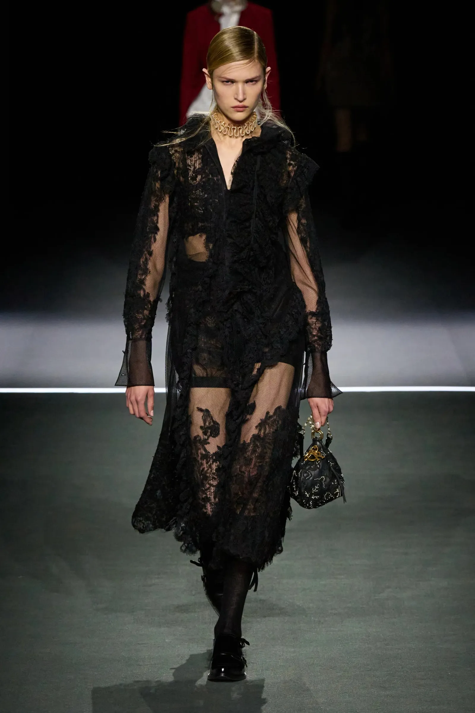
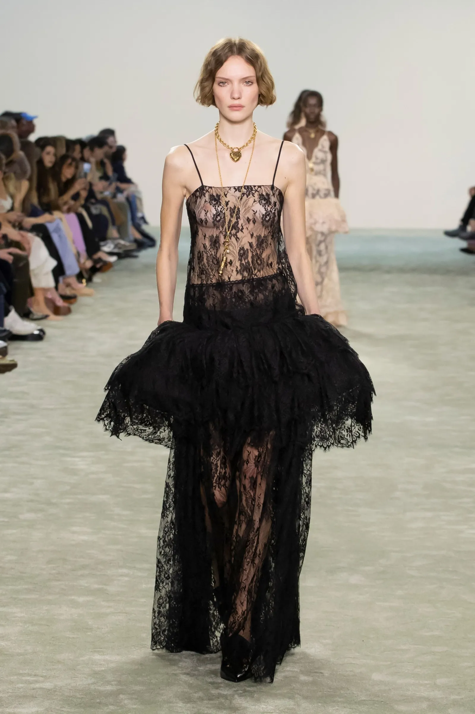
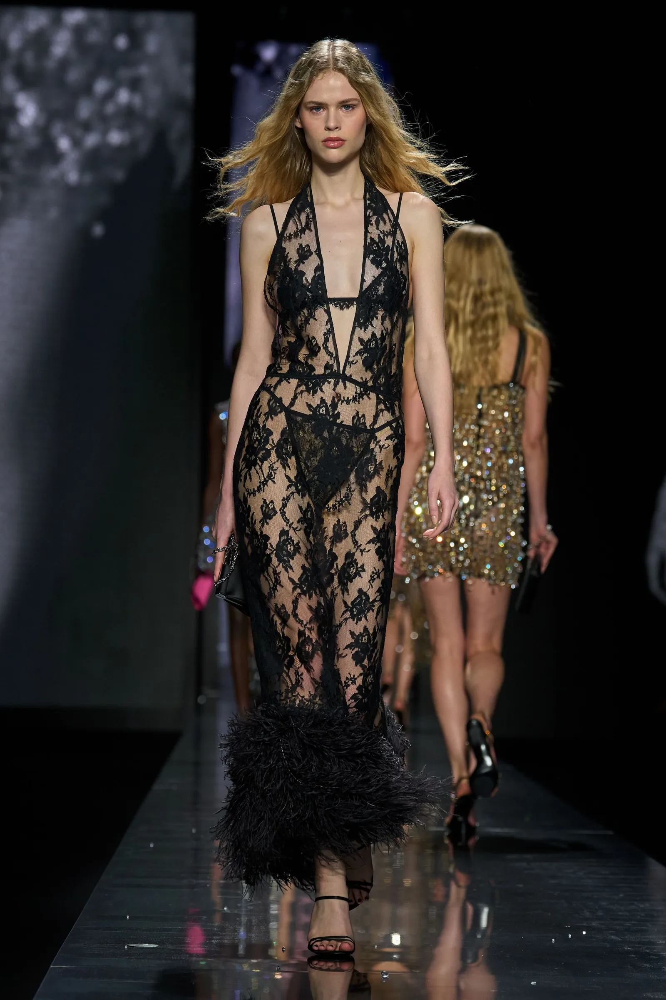
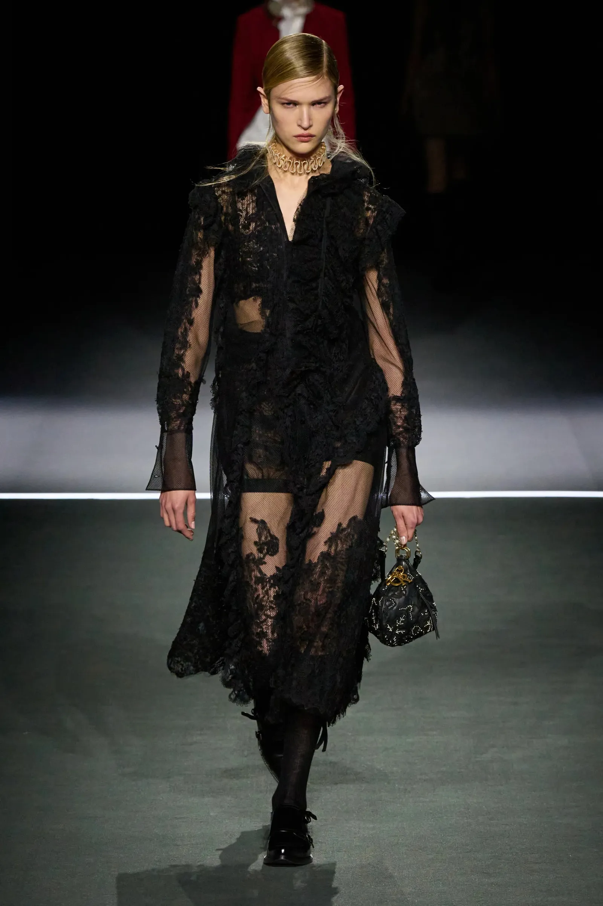
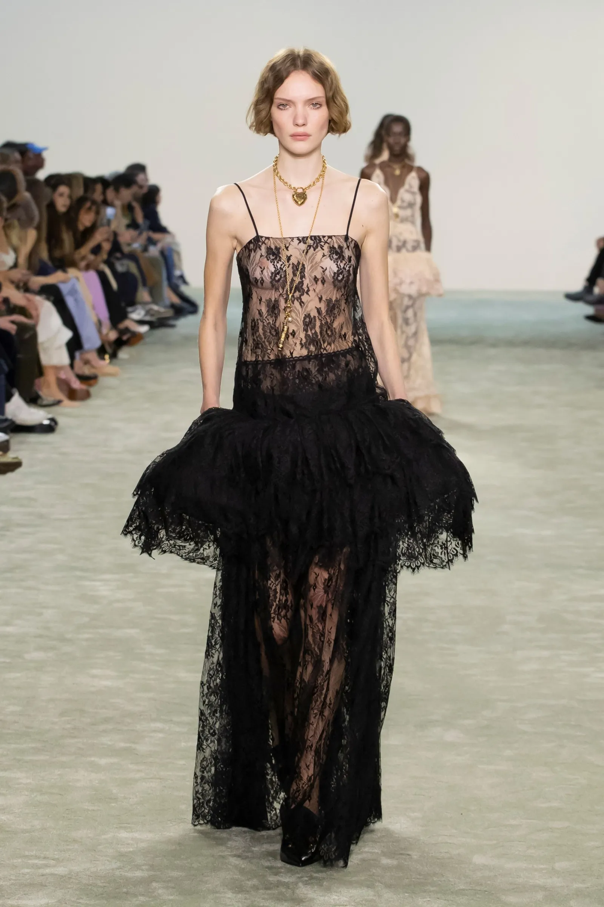
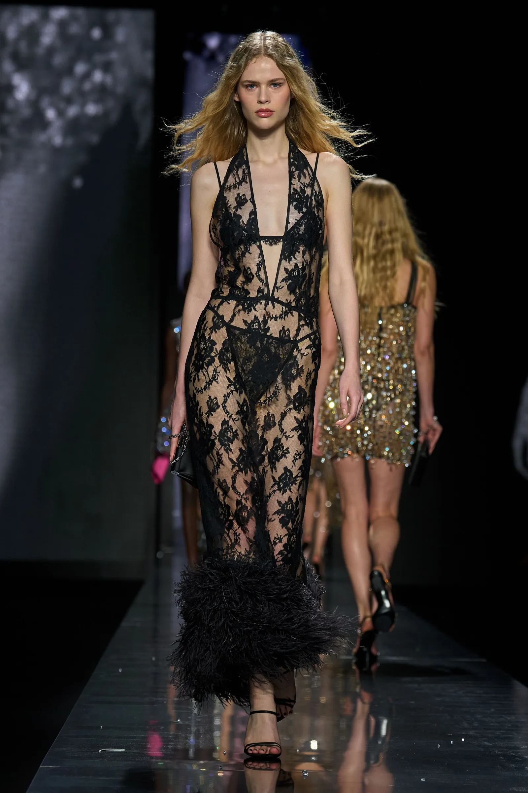

Matière / composition
L’étoffe est une dentelle réalisée à partir de fibres chimiques synthétiques, très probablement en polyamide, éventuellement associé à une faible proportion d’élasthanne pour apporter de la souplesse. Le polyamide est couramment utilisé pour les dentelles en raison de sa finesse, de sa résistance et de sa capacité à former des motifs très détaillés.
Fil
Le fil utilisé est un filament continu synthétique, fin et régulier.
Il s’agit d’un fil simple, non retors, permettant une grande précision dans la réalisation des motifs.
Construction textile
Il s’agit d’un textile en maille, et plus précisément d’une dentelle tricotée.
La structure est obtenue par entrelacement de mailles, créant un fond ajouré sur lequel se développent les motifs floraux.
Liage
Le liage est un liage de maille chaîne (dentelle Raschel).
La structure est obtenue par l’entrelacement de fils formant des mailles verticales, permettant la création de zones ajourées et de motifs floraux intégrés directement dans la construction du tissu.
Ennoblissement couleur
La couleur noire est obtenue par teinture en pièce, procédé permettant une coloration homogène sur l’ensemble de la dentelle, y compris dans les zones les plus fines.
Ennoblissement d’apprêt
Un apprêt léger est appliqué afin de stabiliser la maille, d’améliorer la tenue du tissu et de limiter la déformation. La dentelle conserve néanmoins une grande souplesse et un toucher sec.
Poids
Le tissu présente un poids très léger, estimé entre 40 et 80 g/m², caractéristique des dentelles destinées à l’habillement et à l’ornementation.
Produit fini
- Robe Dior AW 25-26
- Robe Chloé AW 25-26
- Robe Dolce & Gabbana AW 25-26

 




